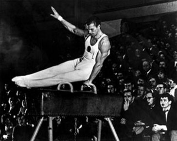

Boris Shakhlin (USSR)
1960 Olympic AA Champion
1958 World AA Champion
1955 European AA Champion

Medal Total
Olympic Games: 7 Gold, 4 Silver, 2 Bronze
World Championships: 6 Gold, 6 Silver, 2 Bronze
European Championships: 6 Gold, 2 Silver, 1 Bronze
Shakhlin was born on January 27, 1932, in the Tyumen area of Siberia and was an orphan by the age of 12. He began gymnastics in 1944 at the railway sports school in Ishim. His first coach was Vasily Porfirev. Shakhlin was eventually noticed by trainer Alexander Mishakov (who also coached Olympic and world champion Larissa Latynina) and moved to Kiev to train. He graduated from the Sverdlovsk Physical Training Technical College and then the Kiev Institute of Physical Culture. Shakhlin announced his retirement at the 1967 USSR Championships, worked as the senior lecturer of the faculty of gymnastics at the Kiev Institute of Physical Culture, and became an international judge in 1968.
He and his wife Larissa divorced in 1974, married each other again in 1977, and have been remarried for nearly 30 years. They have a daughter, Irina, and a grand-daughter, Katya. Shakhlin has sold nearly all of his Olympic and world medals to help support his younger brother's family after his brother died and his sister-in-law fell ill.
Competition Results
1953
USSR Championships: 4th AA, 2nd HB, 4th V, 5th PH
1954
Summer World College Championships: 1st Team, 3rd AA, 1st PH, 1st HB, 5th R, 5th V, 6th FX
URS-TCH-FIN Meet: 1st Team, 1st AA
USSR Championships: 1st AA, 4th FX
World Championships: 1st Team, 4th AA, 2nd
HB, 4th PH
1955
European Championships: 1st AA, 1st PH,
1st PB, 1st HB
USSR Championships: 2nd AA
USSR Cup: 1st AA
World Festival of Youth and Students: 1st Team, 1st AA
1956
Liberation Day International: 2nd AA, 1st PH, 1st HB, 2nd FX
Olympics: 1st Team, 8th AA, 1st PH,
4th V
USSR Championships: 3rd AA, 2nd HB, 3rd PB, 4th FX, 4th PH
USSR Cup: 1st AA
1957
Kiev-Tampere (FIN) Dual Meet: 1st Team, 2nd AA
Moscow Summer Sports Games: 1st Team, 1st AA
USSR Championships: 1st AA, 1st PH, 1st PB, 2nd V, 5th FX
USSR Cup: 1st AA, 1st PH, 1st V, 1st PB, 1st HB
1958
ROM-Ukranian SSR Dual Meet: 1st Team, 1st AA
USSR Championships: 1st AA, 1st PH, 1st PB, 1st HB, 2nd V, 3rd FX
World Championships: 1st Team, 1st AA,
1st PH, 1st PB, 1st HB, 6th V
1959
USSR Championships: 1st AA, 1st PH, 1st PB, 2nd V, 3rd R, 3rd HB
USSR Cup: 2nd AA
1960
Olympics: 2nd Team, 1st AA, 1st
PH, 1st V, 1st PB, 2nd R, 3rd
HB
USSR Championships: 1st AA, 1st PH, 2nd R, 2nd PB, 4th V, 4th HB
USSR Cup: 1st AA
1961
USSR Championships: 2nd AA, 2nd PH, 5th HB, 6th R
1962
USSR Championships: 2nd AA, 1st PH, 1st V, 1st PB, 6th HB
USSR Cup: 1st AA
World Championships: 2nd Team, 3rd AA,
2nd PH, 2nd R, 2nd PB, 3rd V
1963
European Championships: 2nd AA, 1st R,
1st HB, 2nd PB, 3rd PH, 5th V
ITA-USSR Dual Meet: 1st Team, 1st AA
USSR Championships: 1st AA, 1st PB, 2nd PH, 2nd V, 3rd HB, 4th R
USSR Spartakiade: 1st AA
1964
Olympics: 2nd Team, 2nd AA, 1st
HB, 3rd R, 5th V
USSR Championships: 1st HB, 3rd PH, 3rd PB, 5th V, 6th R
USSR Cup: 3rd AA
1965
USSR Cup: 4th AA
1966
FIN-USSR Dual Meet: 1st Team, 4th AA
FRG-USSR Dual Meet: 1st Team, 8th AA
World Championships: 2nd Team, 18th AA
This page was created on March 25, 2000 and was last
updated on March 24, 2026.
© Gymn Forum